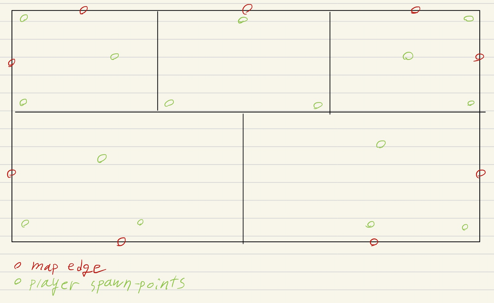

Level Design Guideline
Game Mechanic and Level Designing
Project Catch.io heavily relies on passive mechanics that affects the gameplay-flow. Passive mechanics are game mechanics that the players are expected to always be aware of and actively utilize to win without having a dedicated button to execute it. Examples of such mechanic includes:
- Visible sound waves
- Player footprint
- Environmental objects
You can learn more from Game Mechanics and Features section of the game design document.
Map Sections
This project is expected to have an average of 15 players in a battle-royale-style death-match. A full game map will be divided into small sections that can be either a set of tilemap prefabs or multiple scenes combined together. The level designer will only need to focus on designing these map sections, rather than making the full map at once.
Player spawn-points are manually placed by the designer to ensure that the game is balanced for everyone. To keep the map designing process simplified, a single map section will be large enough to handle three player spawn-points, where the distance between any given spawn-point must be more than 64 tiles. This means that the entire map must contain at least 5 sections.

The above image is a rough approximation of how the player spawn-point and map edges will be placed. In here, we assume that the space between each spawn-points in a single section is 64 tiles apart.
Please note that this is just an example of how the map sections can be combined. The level designer can change the size of a section, or change how they are placed if they need to do so.
Map Elements
Aside from the visual style, the level designer will have to consider the following elements when making a map.
- Map Surface: All levels will have a base ground tile and a special surface tile. These surface can leave footprints, generate sound with a higher volume, or slowdown the player.
- Player Spawn-points: As mentioned above, player spawn-points are manually placed by the level designer. When a player enters a game, they will spawn randomly from a set of locations defined by the designer.
- Offensive/Evasive Items: Offensive and evasive items are objects that players can keep in their inventory and throw it with the throw button. These items are the primary source of gameplay that allows the player to either attack the other player, or run away from certain situations. Level designers should be mindful of where they should be placed and how many should be accessible in a given section.
- Consumable Item Spawn-points: Consumable items are essentially health potions for replenishing player's sanity value. Potions use the same inventory slot as the offensive/evasive items, but they are not re-usable once consumed. To keep the gameplay flow going and prevent players dying from lack of potions, consumable items are spawned in a fixed location that only spawn to the location with the least players in the area.
- Environmental Objects: Environmental objects are map props that is part of the map design. They are not meant to have any player interaction, instead, they are meant to be a static object. However, environmental objects can cast shadows or block bounce-off projectiles, which means that they can be used as a hiding spot or an ambush spot for the player.
- Light Sources: These are part of the environmental object group, however, instead of being a hiding spot for the player, this will become the area that exposes the player, as players will only be visible to other players when they are being lit.
- Buildings and Houses: Similar to environmental objects, buildings are a static prop that is part of the map. However, they do not come in a fixed size like a tree would. Players are expected to use buildings and houses as a landmark for map navigation and hiding.
- Story Telling: When designing a level, the designer should tell a story for each object they place. This aspect of level designing will not be emphasized for the vertical slice of the project, but the release version should be able to tell the game lore and place objects in a way that stays consistent with the story that the designer is trying to tell.